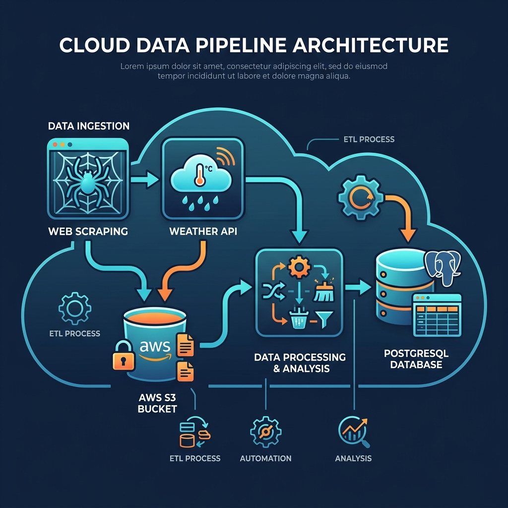

Vous vous êtes déjà demandé où partir ce week-end en étant sûr d'avoir du soleil et un bon hôtel ? C'est pour répondre à cette question — à l'échelle de 35 villes françaises — que j'ai construit ce pipeline de données.
⚠️ Note : Les images présentes dans ce document sont des visuels d'illustration. Elles ne sont pas générées directement par l'exécution des notebooks Jupyter.
Ce projet est un exercice de Data Engineering de bout en bout, réalisé dans le cadre de la formation Data Fullstack chez JEDHA Bootcamp. Le brief (fourni dans 01-Plan_your_trip_with_Kayak.ipynb) demandait de :
L'architecture, les outils et les sources de données étaient largement guidés par l'énoncé. Mon travail a consisté à implémenter ce plan et à m'adapter quand la réalité du terrain s'écartait de la théorie (spoiler : Booking.com n'aime pas les scrapers).
Le pipeline s'appuie sur trois sources, toutes suggérées par le brief :
cd "projet kayak"
pip install pandas sqlalchemy psycopg2-binary plotly boto3 scrapy
Les clés API (OpenWeatherMap) et les credentials AWS doivent être configurés avant d'exécuter le pipeline.
Le projet est découpé en notebooks indépendants. Ce découpage n'est pas parfait (l'ETL est répartie sur deux fichiers au lieu d'un seul, par exemple), mais chaque brique est autonome et réexécutable séparément.
| Notebook | Ce qu'il fait |
|---|---|
meteo api booking v3.ipynb |
Appels API OpenWeatherMap + calcul du score météo |
booking avec description.ipynb |
Scraping Booking.com (avec contournement anti-bot) |
geocodageafterscrap.ipynb |
Géocodage GPS des hôtels via Nominatim (adaptation non prévue par le brief) |
upload.ipynb |
Upload des CSV bruts vers Amazon S3 |
etlbooking.ipynb |
ETL Hôtels : nettoyage Regex + chargement RDS |
meteo et cartes optimisees.ipynb |
ETL Météo + génération des cartes Plotly |
L'architecture Data Lake → Data Warehouse était demandée par l'énoncé. Je l'ai implémentée comme suit :
Nominatim API ──┐
OpenWeatherMap ──┼──→ Python (Pandas) ──→ CSV bruts ──→ AWS S3 (Data Lake)
Booking.com ────┘ │
(Scrapy) ▼
ETL (Nettoyage + Regex)
│
▼
AWS RDS PostgreSQL (Warehouse)
│
▼
Plotly (Cartes carto-positron)
Pour aller plus loin, consultez la Synthèse du projet et la FAQ technique.
| Composant | Phase projet | Estimation production |
|---|---|---|
| AWS S3 | Gratuit (Free Tier) | ~0.023 $/Go/mois |
| AWS RDS | Gratuit (Free Tier) | Variable selon instance |
| Nominatim | Gratuit | Gratuit |
| OpenWeatherMap | Gratuit (API Standard) | Gratuit dans les limites |
| Total projet | 0 € | — |
⚠️ Rappel : Les captures ci-dessous sont des images d'illustration pour montrer le type de cartes que le pipeline produit. Ce ne sont pas les exports bruts des notebooks.
Note technique : les cartes utilisent le style carto-positron au lieu d'OpenStreetMap, pour contourner des problèmes d'affichage liés à la Referrer Policy dans Jupyter.
Score calculé via : Température Moyenne − (Pluie Totale en mm × 2)
699 hôtels géolocalisés sur les 880 scrapés.

projet kayak/
├── 01-Plan_your_trip_with_Kayak.ipynb # Brief du projet (énoncé JEDHA)
├── meteo api booking v3.ipynb # API Météo
├── booking avec description.ipynb # Scraper Booking
├── geocodageafterscrap.ipynb # Géocodage post-scraping
├── upload.ipynb # Upload S3
├── etlbooking.ipynb # ETL Hôtels
├── meteo et cartes optimisees.ipynb # ETL Météo + Cartes
├── *.csv # Données
├── img_*.png # Illustrations
├── Synthese_Projet_Kayak.md # Retour d'expérience détaillé
├── FAQ.md # Questions techniques fréquentes
└── README.md # Ce fichier
Projet réalisé par Philippe Toso dans le cadre de la formation Data Fullstack — JEDHA Bootcamp.